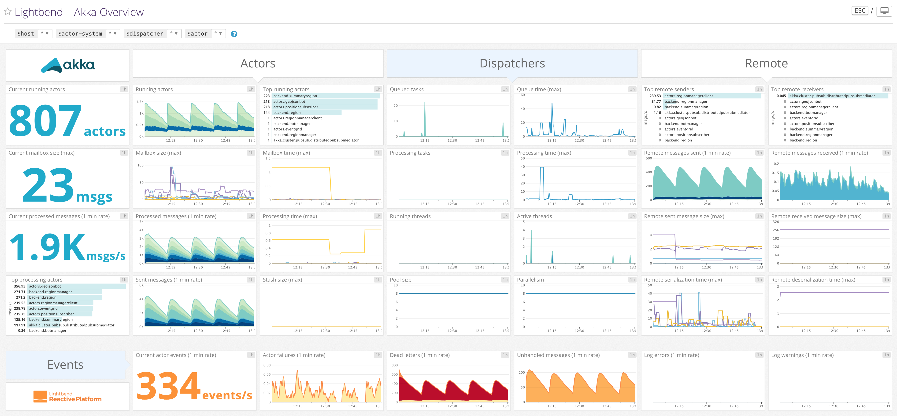

Lightbend Reactive Platform
Monitor your Lightbend Reactive Platform applications with this DataDog integration. Monitoring of Lightbend Reactive Platform requires a subscription from Lightbend. More information can be found here
Lightbend Reactive Platform

Get metrics from your Lightbend Reactive Platform application in real time to:
This integration used Lightbend Monitoring which requires a subscription.
The easiest way to integrate Lightbend Monitoring with Datadog is to use the Datadog plugin.
By default, Lightbend Monitoring sends all metrics over the wire, but it is possible to limit fields reported via configuration (see example below).
The Datadog plugin uses a default configuration that can be overriden:
cinnamon.datadog {
statsd {
host = "192.168.0.1"
port = 8888
frequency = 60s
}
report {
histogram = ["min", "max", "p98", "p99", "p999"]
}
}
Th configuration values explained:
cinnamon.datadog.statsd.host: IP address of your DogStatsD instance.cinnamon.datadog.statsd.port: port number of your DogStatsD instance.cinnamon.datadog.statsd.frequency: the frequency with with data is pushed from Cinnamon to the DogStatsD instance.cinnamon.datadog.report.histogram: instruction for how to filter histogram data sent to DogStatsD. In the above example only `max` and `p99` will be sent.